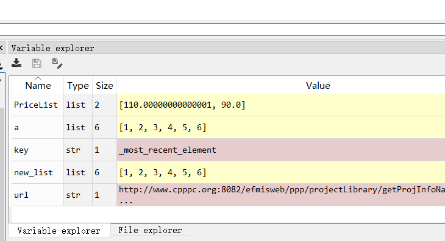
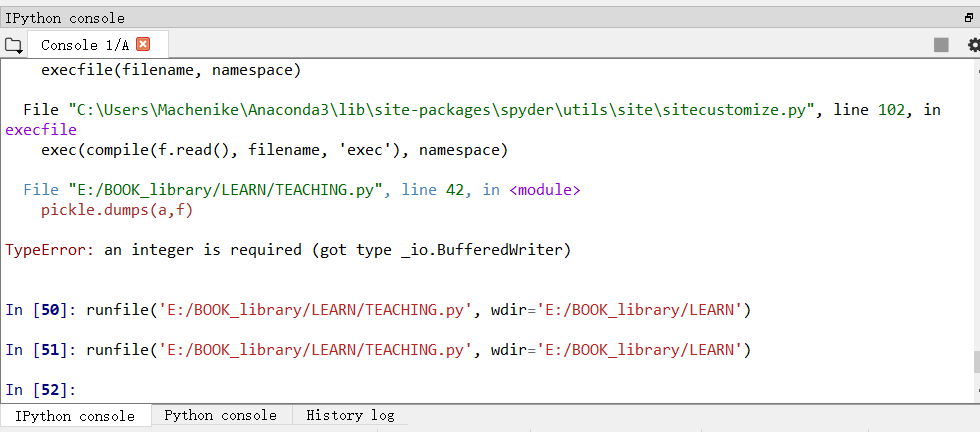
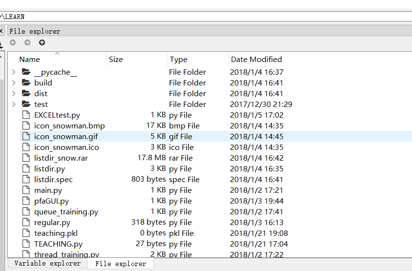
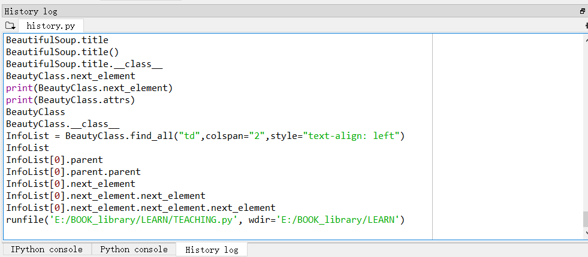
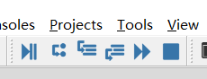

近日准备一份关于面向日常工作的Python入门指南，所谓面向日常工作，意思即希望利用python开发一些解放日常工作的脚本。比如文件读写、数据处理、文本分析以及简单的爬虫技术，掌握了这些技术可以做什么呢？它可以批量化处理你手头的任务，可以自动化分析案头的任务，让你从繁重的手工劳动中解脱出来，更甚而言之，掌握一门编程语言，可以让你重新了解你的计算机，更好地利用它。
为什么要加上一个“面向日常工作”的定语？我们知道，Python作为C语言系的一门编程语言，在当下获得了前所未有的关注与热度，Python不仅在科学计算、爬虫等领域有着很好的特性，又堪称胶水语言，可以与许多编程语言及应用程序实现对接，这都极大地扩展了python的受众，但就其细节来说，开发者必须掌握相当程度的python高级特性及其它相关知识。对于本指南来说，笔者不希望涉足以上的内容，而是专注于如何在很短的时间内，教会读者如何迅速上手python并且利用其解决当下自己本职工作面临的一些问题。这同样是非常有价值的且饶有趣味的。
本指南立足于零基础且偏经管类的研究生群体，指南的内容会尽量贴合通俗化语言，且不涉及深层次的语法特性，带着任务做事情，以期达到事半功倍的效果。
1. Python 语法基础
本篇章主要讲解Python的一些基本计算、判断语句结构。为基础章节，为之后的应用打下基础。
1.1 第一个python程序
运算符及逻辑符号
算数运算符 加减乘除
逻辑运算符 与或非等
容器简介(数据结构简介)
所谓容器，即存储数据的结构，因此有的书本称之为数据结构教程。
列表
列表是一种可变化的容器，它用于存储一系列相同等级的数据，如班级同学名单。定义式如下
name_list = ['张三','李四','王五','王二小']
如此一来我们就获得了一个列表，这个列表叫做name_list.那么我们如何表示李四这个名字呢？可以看到李四是列表中的第二个，我们可以通过列表下标获取。
name = name_list[1]
明明是第二个名字，为什么这里是1呢，因为对于容器来说，第一个序号都是0，而非1.
列表的方法
- append
- index
- pop
字典
元组
字符串
流程控制语句
if
|
|
while
|
|
for
|
|
输入与输出
|
|
Spyder IDE简介
对我们所常用的Spyder这一集成开发环境进行简介，方便大家更好地理解自己写的程序是怎样运行的。提高学习效率。
变量查看区

IPython控制台

信号提示与报错查看


debug

Python 函数与类
函数与类，这是Python中抽象化的概念，了解这方面的知识可以使你更好地使用外部库函数，从类再深讲，Python就会体现其高级特性，本指南不会涉及，因此对于类的概念，我们也是但求理解，不求实践。
自定义函数
|
|
命名空间
|
|
面向对象：类的初印象
回头看：容器的方法
案例一：填充一份财经日报
涉及内容：格式化字符串
一份日常的财经日报，是否可以从遵循一定的书写范式中抽象出来，由收集到的数据自动添加呢？如果可以，我们就能使用Python批量化生成日报周报，人所做的工作就大幅减轻了。
|
案例二：爬取并分析一个网页
涉及内容： request BeautifulSoup
本案例对Python爬虫进行一个简单的实战，主要展现Python惊人的解析网页的能力与方便快捷的爬虫方法。
|
|
案例三：模拟并估计价格二叉树
涉及内容：Demical 、 迭代
价格二叉树是金融工程中较常见的一种习题，在这里我们引入一点特别的东西，在讲解如何实现二叉树的同时，学习怎样在Python中书写递归函数以及计算机底层的一些特性，递归函数是编程语言最富有魅力的地方，同时也是数据算法的启蒙钥匙。
|
|